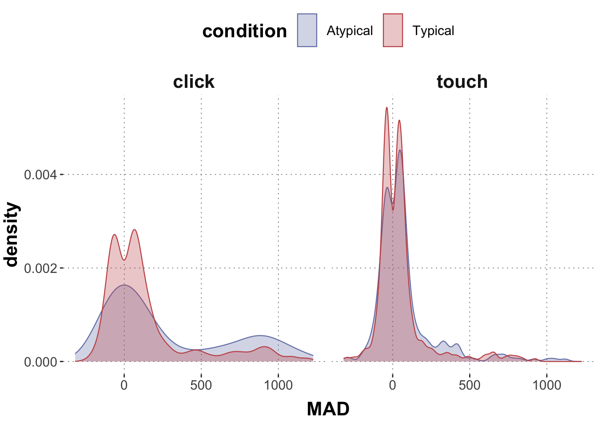

Here is code to load (and if necessary, install) required packages, and to set some global options (for plotting and efficient fitting of Bayesian models).
Toggle code
# install packages from CRAN (unless installed)pckgs_needed <-c("tidyverse","brms","rstan","rstanarm","remotes","tidybayes","bridgesampling","shinystan","mgcv")pckgs_installed <-installed.packages()[,"Package"]pckgs_2_install <- pckgs_needed[!(pckgs_needed %in% pckgs_installed)]if(length(pckgs_2_install)) {install.packages(pckgs_2_install)} # install additional packages from GitHub (unless installed)if (!"aida"%in% pckgs_installed) { remotes::install_github("michael-franke/aida-package")}if (!"faintr"%in% pckgs_installed) { remotes::install_github("michael-franke/faintr")}if (!"cspplot"%in% pckgs_installed) { remotes::install_github("CogSciPrag/cspplot")}# load the required packagesx <-lapply(pckgs_needed, library, character.only =TRUE)library(aida)library(faintr)library(cspplot)# these options help Stan run fasteroptions(mc.cores = parallel::detectCores())# use the CSP-theme for plottingtheme_set(theme_csp())# global color scheme from CSPproject_colors = cspplot::list_colors() |>pull(hex)# names(project_colors) <- cspplot::list_colors() |> pull(name)# setting theme colors globallyscale_colour_discrete <-function(...) {scale_colour_manual(..., values = project_colors)}scale_fill_discrete <-function(...) {scale_fill_manual(..., values = project_colors)}
Toggle code
dolphin <- aida::data_MTrerun_models =FALSE
Comparing models with LOO-CV and Bayes factors
Suppose that the ground truth is a robust regression model generating our data (a robust regression uses a Student-t distribution as likelihood function):
Toggle code
set.seed(1970)# number of observationsN <-100# 100 samples from a standard normalx <-rnorm(N, 0, 1)intercept <-2slope <-4# robust regression with a Student's t error distribution# with 1 degree of freedomy <-rt(N, df =1, ncp = slope * x + intercept)data_robust <-tibble(x = x, y = y)
A plot of the data shows that we have quite a few “outliers”:
We are going to compare two models for this data, a normal regression model and a robust regression model.
Normal and robust regression models
A normal regression model uses a normal error function.
Toggle code
fit_n <-brm(formula = y ~ x,data = data_robust,# student prior for slope coefficientprior =prior("student_t(1,0,30)", class ="b"),)
We will want to compare this normal regression model with a robust regression model, which uses a Student’s t distribution instead as the error function around the linear predictor:
Toggle code
fit_r <-brm(formula = y ~ x,data = data_robust,# student prior for slope coefficientprior =prior("student_t(1,0,30)", class ="b"),family =student())
Let’s look at the posterior inferences of both models about the true (known) parameters of the regression line:
# A tibble: 4 × 5
model variable q5 mean q95
<chr> <chr> <num> <num> <num>
1 normal b_Intercept 2.42 7.66 13.2
2 normal b_x 7.47 13.5 19.8
3 robust b_Intercept 1.80 2.49 3.24
4 robust b_x 5.01 6.10 7.27
Remember that the true intercept is 2 and the true slope is 4. Clearly the robust regression model has recovered the ground-truth parameters much better.
Leave-one-out cross validation
We can use the loo package to compare these two models based on their posterior predictive fit. Here’s how:
elpd_diff se_diff
robust 0.0 0.0
normal -131.3 25.8
We see that the robust regression model is better by ca. -131 points of expected log predictive density. The table shown above is ordered with the “best” model on top. The column elpd_diff lists the difference in ELPD of every model to the “best” one. In our case, th estimated ELPD difference has a standard error of about 26. Computing a \(p\)-value for this using Lambert’s \(z\)-score method, we find that this difference is “significant” (for which we will use other terms like “noteworthy” or “substantial” in the following):
Toggle code
1-pnorm(-loo_comp[2,1], loo_comp[2,2])
[1] 0
We conclude from this that the robust regression model is much better at predicting the data (from a posterior point of view).
Bayes factor model comparison (with bridge sampling)
We use bridge sampling, as implemented in the formidable bridgesampling package, to estimate the (log) marginal likelihood of each model. To do this, we need also samples from the prior. To do this reliably, we need many more samples than we would normally need for posterior inference. We can update() existing fitted models, so that we do not have to copy-paste all specifications (formula, data, prior, …) each time. It’s important for bridge_sampler() to work that we save all parameters (including prior samples).
We can then use the bf (Bayes factor) method from the bridgesampling package to get the Bayes factor (here: in favor of the robust regression model):
Toggle code
bf_bridge
Estimated Bayes factor in favor of robust_bridge over normal_bridge: 41136407426471809154394622543225576928422395904.00000
As you can see, this is a very clear result. If we had equal levels of credence in both models, after seeing the data, our degree of belief in the robust regression model should … well, virtually infinitely higer than our degree of belief in the normal model.
Comparing LOO-CV and Bayes factors
LOO-CV and Bayes factor gave similar results in the Walkthrough. The results are qualitatively the same: the (true) robust regression model is preferred over the (false) normal regression model. Both methods give quantitative results, too. But here only the Bayes factor results have a clear intuitive interpretation. In this exercise we will explore the main conceptual difference between LOO-CV and Bayes factors, which is:
LOO-CV compares models from a data-informed, ex post point of view based on a (repeatedly computed) posterior predictive distribution
Bayes factor model comparison takes a data-blind, ex ante point of view based on the prior predictive distribution
What does that mean in practice? – To see the crucial difference, imagine that you have tons of data, so much that they completely trump your prior. LOO-CV can use this data to emancipate itself from any wrong or too uninformative prior structure. Bayes factor comparison cannot. If a Bayesian model is a likelihood function AND a prior, Bayes factors give the genuine Bayesian comparison, taking the prior into account. That is what you want when your prior structure are really part of your theoretical commitment. If you are looking for prediction based on weak priors AND a ton of data to train on, you should not use Bayes factors.
To see the influence of priors on model comparison, we are going to look at a very simple data set generated from a standard normal distribution.
Toggle code
# number of observationsN <-100# data from a standard normaly <-rnorm(N)# list of data for Standata_normal <-tibble(y = y)
Exercise 1a
Use brms to implement two models for inferring a Gaussian distribution.
The first one has narrow priors for its parameters (mu and sigma), namely a Student’s \(t\) distribution with \(\nu = 1\), \(\mu = 0\) and \(\sigma = 10\).
The second one has wide priors for its parameters (mu and sigma), namely a Student’s \(t\) distribution with \(\nu = 1\), \(\mu = 0\) and \(\sigma = 1000\).
Solution
Toggle code
fit_narrow <-brm(formula = y ~1,data = data_normal,prior =c(prior("student_t(1,0,10)", class ="Intercept"),prior("student_t(1,0,10)", class ="sigma")))fit_wide <-brm(formula = y ~1,data = data_normal,prior =c(prior("student_t(1,0,1000)", class ="Intercept"),prior("student_t(1,0,1000)", class ="sigma")))
Exercise 1b
Compare the models with LOO-CV, using the loo package, and interpret the outcome.
Estimated Bayes factor in favor of narrow_bridge over wide_bridge: 9868.34657
The Bayes factors in favor of the narrow model is about 10000. That’s massive evidence that, from a prior point of view, the narrow model is much better.
Exercise 1d
If all went well, you should have seen a difference between the LOO-based and the BF-based model comparison. Explain what’s going on in your own words.
Solution
Since BF-based comparison looks at the models from the prior point of view, the model with wide priors is less precise, puts prior weight on a lot of “bad” paramter values and so achieves a very weak prior predicitive fit.
The LOO-based estimates are identical because both models have rather flexible, not too strong priors, and so the data is able to produce roughly the same posteriors in both models.
Comparing (hierarchical) regression models
We are going to consider an example from the mouse-tracking data. We use categorical variables group and condition to predict MAD measures. We are going to compare different models, including models which only differ with respect to random effects.
Let’s have a look at the data first to remind ourselves:
Toggle code
# aggregatedolphin <- dolphin %>%filter(correct ==1) # plotting the dataggplot(data = dolphin, aes(x = MAD, color = condition, fill = condition)) +geom_density(alpha =0.3, linewidth =0.4, trim = F) +facet_grid(~group) +xlab("MAD")

Exercise 2a
Set up four regression models and run them via brms:
Store in variable model1_noInnteraction_FE a regression with MAD as dependent variable, and as explanatory variables group and condition (but NOT the interaction between these two).
Store in variable model2_interaction_FE a regression with MAD as dependent variable, and as explanatory variables group, condition and the interaction between these two.
Store in variable model3_interaction_RandSlopes a model like model2_interaction_FE but also adding additionally random effects, namely random intercepts for factor subject_id.
Store in model4_interaction_MaxRE a model like model2_interaction_FE but with the maximal random effects structure licensed by the design of the experiment.
Solution
Toggle code
model1_NOinteraction_FE =brm( MAD ~ condition + group, data = dolphin) model2_interaction_FE =brm( MAD ~ condition * group, data = dolphin)model3_interaction_RandSlopes =brm( MAD ~ condition * group + (1| subject_id), data = dolphin) model4_interaction_MaxRE =brm( MAD ~ condition * group + (1+ group | exemplar) + (1| subject_id), data = dolphin)
Exercise 2b
This exercise and the next are meant to have you think more deeply about the relation (or unrelatedness) of posterior inference and model comparison. Remember that, conceptually, these are two really different things.
To begin with, look at the summary of posterior estimates for model model2_interaction_FE. Based on these results, what would you expect: is the inclusion of the interaction term relevant for loo-based model comparison? In other words, do you think that model2_interaction_FE is better, equal or worse than model2_NOinteraction_FE under loo-based model comparison? Explain your answer.
Solution
Toggle code
model2_interaction_FE
Family: gaussian
Links: mu = identity; sigma = identity
Formula: MAD ~ condition * group
Data: dolphin (Number of observations: 1915)
Draws: 4 chains, each with iter = 2000; warmup = 1000; thin = 1;
total post-warmup draws = 4000
Population-Level Effects:
Estimate Est.Error l-95% CI u-95% CI Rhat Bulk_ESS
Intercept 278.36 16.67 246.01 310.55 1.00 1995
conditionTypical -135.95 19.76 -173.22 -97.04 1.00 1991
grouptouch -203.51 22.64 -248.35 -159.41 1.00 1401
conditionTypical:grouptouch 111.75 26.92 57.53 164.67 1.00 1417
Tail_ESS
Intercept 2236
conditionTypical 2489
grouptouch 2213
conditionTypical:grouptouch 1596
Family Specific Parameters:
Estimate Est.Error l-95% CI u-95% CI Rhat Bulk_ESS Tail_ESS
sigma 267.18 4.35 259.18 276.13 1.00 3313 2776
Draws were sampled using sampling(NUTS). For each parameter, Bulk_ESS
and Tail_ESS are effective sample size measures, and Rhat is the potential
scale reduction factor on split chains (at convergence, Rhat = 1).
The coefficient for the interaction term is credibly different from zero, in fact quite large. We would therefore expect that the data “needs” the interaction term; a model without it is likely to fare worse.
Exercise 2c
Now compare the models directly using loo_compare. Compute the \(p\)-value (following Lambert) and draw conclusion about which, if any, of the two models is notably favored by LOO model comparison.
The model model2_NOinteraction_FE is worse by -7.3850413 points of expected log predictive density with a standard error of ca. 4.7070928. This translates into a “significant” difference, leading to the conclusion that the model with interaction term is really better:
Toggle code
1-pnorm(-loo_comp[2,1], loo_comp[2,2])
[1] 0.003703731
Exercise 3d
Now, let’s also compare models that differ only in their random effects structure. We start by looking at the posterior summaries for model4_interaction_MaxRE. Just by looking at the estimated coefficients for the random effects (standard deviations), would you conclude that these variables are important (e.g., that the data provides support for these parameters to be non-negligible)?
Solution
Toggle code
model4_interaction_MaxRE
Family: gaussian
Links: mu = identity; sigma = identity
Formula: MAD ~ condition * group + (1 + group | exemplar) + (1 | subject_id)
Data: dolphin (Number of observations: 1915)
Draws: 4 chains, each with iter = 2000; warmup = 1000; thin = 1;
total post-warmup draws = 4000
Group-Level Effects:
~exemplar (Number of levels: 19)
Estimate Est.Error l-95% CI u-95% CI Rhat Bulk_ESS
sd(Intercept) 37.12 14.52 10.62 68.17 1.00 943
sd(grouptouch) 26.75 16.28 1.79 62.33 1.00 1320
cor(Intercept,grouptouch) -0.70 0.40 -1.00 0.57 1.00 1885
Tail_ESS
sd(Intercept) 1244
sd(grouptouch) 1657
cor(Intercept,grouptouch) 2155
~subject_id (Number of levels: 108)
Estimate Est.Error l-95% CI u-95% CI Rhat Bulk_ESS Tail_ESS
sd(Intercept) 77.93 8.84 61.81 96.71 1.00 1734 2047
Population-Level Effects:
Estimate Est.Error l-95% CI u-95% CI Rhat Bulk_ESS
Intercept 279.94 24.55 230.95 327.74 1.00 1791
conditionTypical -136.65 26.62 -189.68 -83.86 1.00 1442
grouptouch -202.19 28.43 -259.15 -144.58 1.00 2027
conditionTypical:grouptouch 110.34 29.29 53.06 169.25 1.00 1989
Tail_ESS
Intercept 2372
conditionTypical 1702
grouptouch 2265
conditionTypical:grouptouch 2133
Family Specific Parameters:
Estimate Est.Error l-95% CI u-95% CI Rhat Bulk_ESS Tail_ESS
sigma 254.80 4.35 246.50 263.52 1.00 4491 2780
Draws were sampled using sampling(NUTS). For each parameter, Bulk_ESS
and Tail_ESS are effective sample size measures, and Rhat is the potential
scale reduction factor on split chains (at convergence, Rhat = 1).
All the parameters from the RE structure, except for the correlation term, are credibly bigger than zero, suggesting that the data lends credence to these factors playing a role in the data-generating process.
Exercise 3e
Compare the models model3_interaction_RandSlopes and model4_interaction_MaxRE with LOO-CV. Compute Lambert’s \(p\)-value and draw conclusions about which, if any, of these models is to be preferred by LOO-CV. Also, comment on the results from 3.b through 3.e in comparison: are the results the same, comparable, different … ; and why so?
LOO-CV finds no noteworthy difference between these models. In tendency, the smaller model is even better. This is different from the previous case in 3.b/c which might have suggested that if a parameter \(\theta\) is credibly different from 0, then we also prefer to have it in the model for predictive accuracy. But this is not the case in the current case (3.d/e) where the smaller model is preferred. An explanation for this could be that not all parameters are equal. The fixed effect terms have more impact on the variability of predictions than random effect terms.
Exercise 3f
Compare all four models using LOO-CV with method loo_compare and interpret the outcome. Which model is, or which models are the best?
# model 4 is best, followed by model 3. # As models 3 and 4 are incomparable by LOO-CV (from part 3.c), # we only need to check if model 4 is better than model 2, which is on third place:loo_compr <-loo_compare(loo(model4_interaction_MaxRE),loo(model2_interaction_FE))# We find that this difference is substantial:1-pnorm(-loo_comp[2,1], loo_comp[2,2])